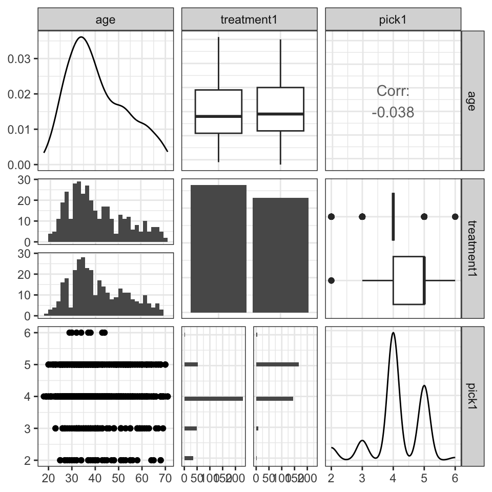
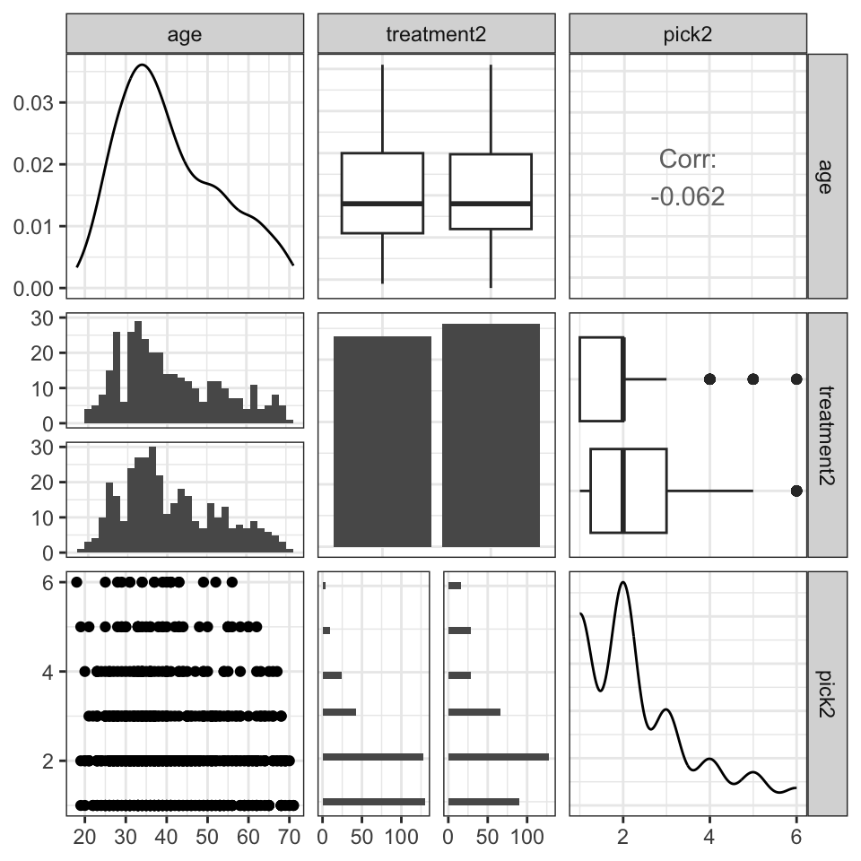
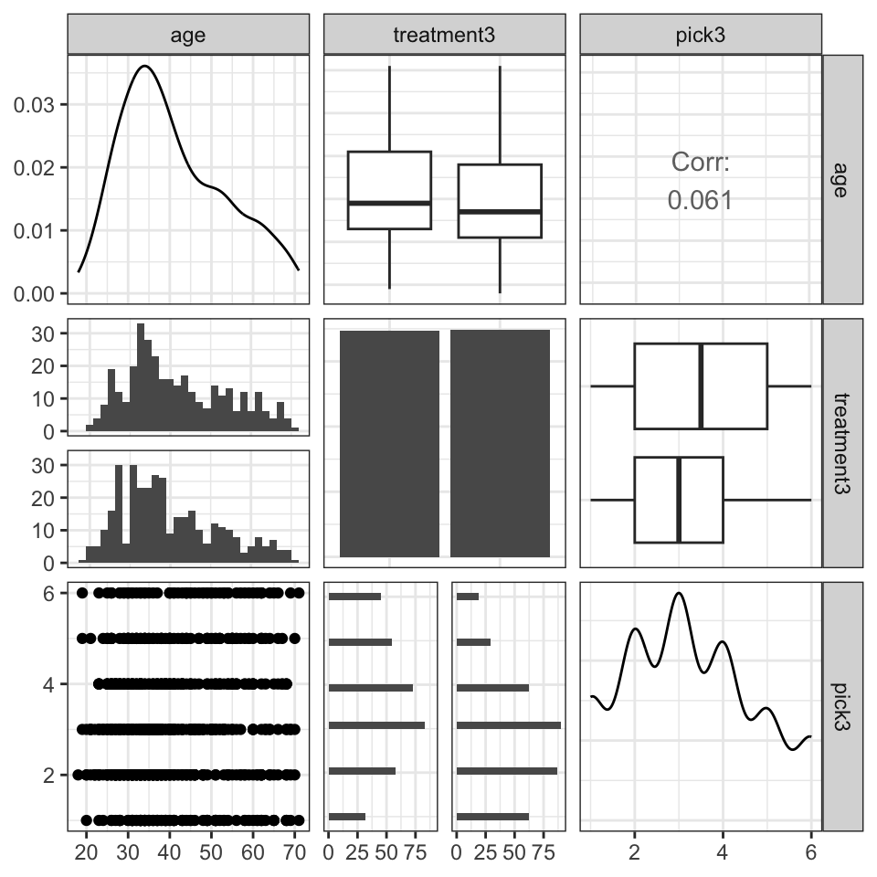
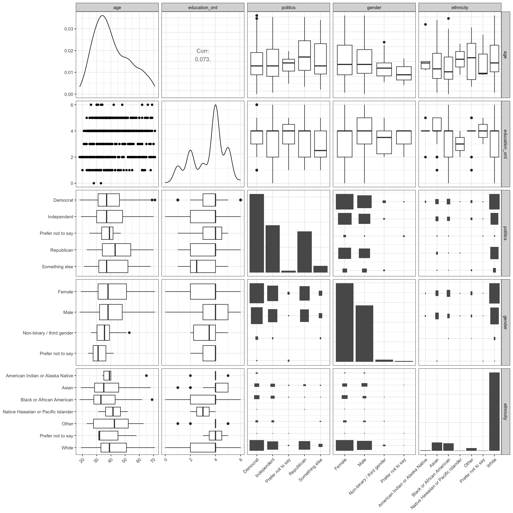
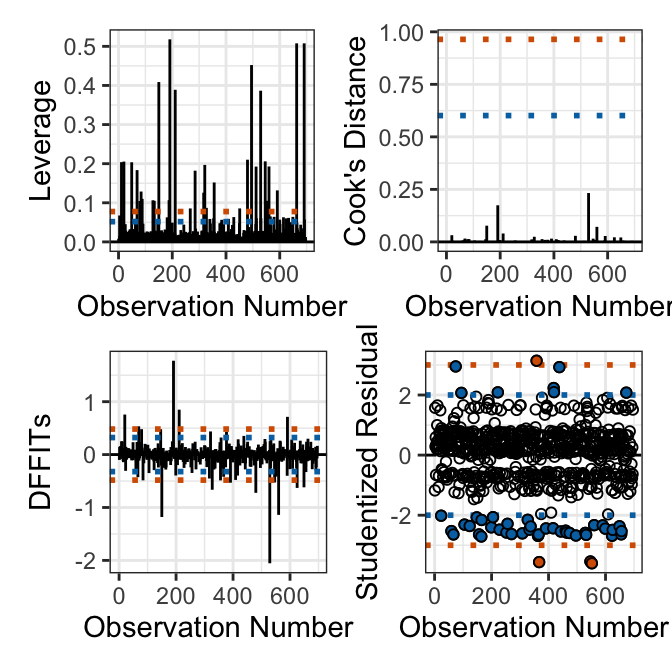
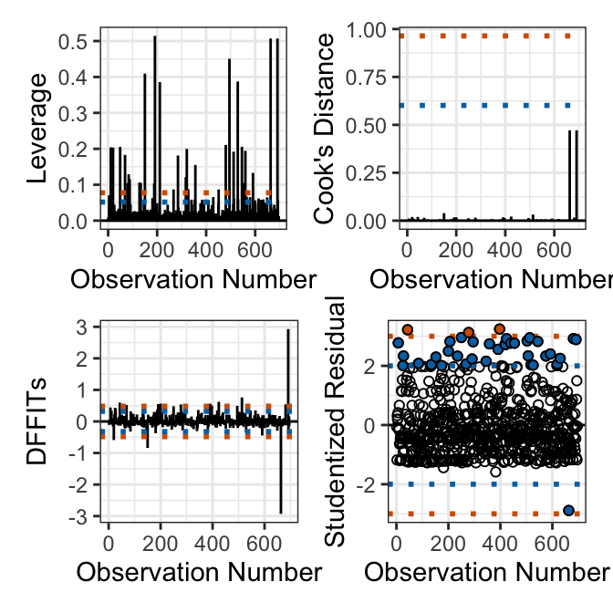
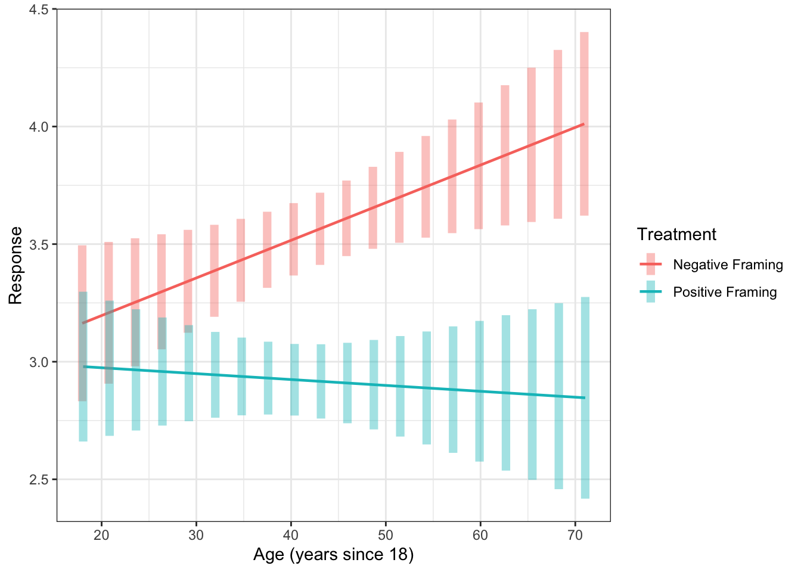

When people make decisions, their choices are often swayed by how information is presented. This is often described as “the framing effect.” One example of this, is how commercials describe new medications. As an example, Nereus (tradipitant), a new drug for motion-induced vomiting like sea-sickness, is marketed with a positive frame as reducing vomiting incidence from 44% to 18% (a reduction of 60%). This marketing makes it seem more effective than a negative frame that says just 18% of patients still experienced vomiting, even though both statements are true.
Xu (2024) aimed to evaluate whether older adults are more or less vulnerable to framing than younger adults. They collected a sample of 696 adults aged 18 to 71 and exposed them to three different scenarios
Scenario 1: Rate Drug Efficacy (1 = very bad, 6 = very good)
Positive Frame: 70 out of 100 patients felt better
Negative Frame: 30 out of 100 patients did not feel better
Positive Frame: Choice between 200 saved vs 1/3 chance all 600 are saved.
Negative Frame: Choice between 400 die vs 2/3 chance all 600 die.
In each scenario, participants were randomly assigned a positive or negative frame. They rated their response on a 1-6 scale. The researchers want to build three models, one for each scenario adjusting for simultaneous linear changes in demographic variables (gender, ethnicity, education level, political affiliation).
They want to evaluate whether, as adults age, the way choices are worded have more influence on their judgments and ultimate choices. If there is a change, are those changes driven by positive or negative framings? At what age does this effect onset?
Your Goals:
Determine the correct analysis strategy and conduct the necessary analyses.
Hint 1: Ensure to assess and communicate results about the model fit.
Hint 2: Ensure to think about whether or which interactions need to be included.
Hint 3: You will need run various post hoc procedures (e.g., emmeans, emtrends or johnson_neyman).
Hint 4: Looking at the paper may be helpful. They do include R code, but I expect you to do a much better job using the techniques we discussed (they do somethings differently)
Write a clear, concise, complete, and correct report conveying an answer to their research question.
The data are in HW4Data.csv but they will require some manual and tidyverse cleaning.
1 Loading and Cleaning the Data
The data are presented in a CSV file such that each row corresponds to a study participant. Before further processing the raw data for exploratory analysis and regression, we manually remove the first row of the dataset, as the appropriate column headers are contained in the second row.
The rest of our analysis will involve the following columns: gender, age, politics, ethnicity, education, treatment(1-3), and pick(1-3). If we were to filter the data, We would also use the two attention columns: attentionCheck and ageAttentionCheck as our data cleaning filters. Any null values or ages that disagreed with the age attention check would be removed. After filtration, we would have \(n = 535\). Due to the small effect of the data, any significant removal of data severly limits the power. To make further analysis feasible, we acknowledge the concerns regarding failing to remove this potentially problematic data, but include it nevertheless. Finally, for the sake of simplification, we assume that education is ordinal, and recategorize at as such. Finally, following the approach of the original work, we standardize age such that the lowest age (18) is 0.
Code
dat =read_csv("HW4Data.csv")dat = dat |> dplyr::select(attentioncheck, gender,age,politics, ethnicity,education, treatment1,treatment2,treatment3, pick1,pick2,pick3, ) |>mutate(education_ord =case_when( education =="Less than high school"~0, education =="High school graduate"~1, education =="Some college"~2, education =="2 year degree"~3, education =="4 year degree"~4, education =="Professional degree"~5, education =="Doctorate"~6 )) |>mutate(age18 = age -18)
2 Exploratory Data Analyses
Code
for (i in1:3) {print(ggpairs(dat, columns =c("age", paste0("treatment", i), paste0("pick", i))) +theme_bw())}
Figure 1: Age, Frame Valence, and Response Correlation Analysis
(a) Attribute

(b) Goal

(c) Risky Choice

Figure 1 shows that with respect to the variable of interest, the age sample is somewhat right skewed, while the treatment assignment is balanced and the age distribution across treatments is consistent. The mixed results regarding correlation of age and reponse variable suggest that age itself is not primarily responsible for the observed variability in willingness to take risk as measured by scenario 2 and 3 or view of drug efficacy as measured by scenario 1. Similarly, the plots do not strongly suggest that the treatments are clearly discernible with respect to the response variable for any scenario, though this does not directly address the significance of the interaction effect.
Figure 2 do not suggest any significant relationship among response variables. Furthermore, the plot indicates that the response variables differ in their sample distribution.
Figure 3: Demographic Features Correlation Analysis

Figure 3 first immediately indicate that there are concerns regarding representativeness with varying degrees of severity. Primarily, women and democrats are moderately over-represented, while white people are vastly over-represented and hispanic is not even indicated as a primary category. Although there’s not strong prior evidence to suggest variability in susceptibility to frame valence across ethnic groups, this is still problematic. My intuition suggests that there are more likely differences across gendered and political lines, but the difference in sample sizes is not catastrophic. The correlation between education and age is insignificant, and no other demographic features indicate strong evidence of multicollinearity
Residual Analysis suggests moderate skew and excess kurtosis particularly for scenario 2, while there is observable but not obviously highly problematic tail behavior for both scenarios 1 and 3.
Code
for (model in mods) {print(plotInfluence(model))}
Figure 5: Influence Analysis
(a) Attribute

(b) Goal

(c) Risky Choice
Influence analysis in Figure 5 shows the exist of several high leverage points across scenarios, as well as several moderate outliers across scenarios. In particular, scenario 1 has more negative outliers, while scenario 2 has more positive outliers, consistent with the tail behavior of the residual analysis in Figure 4. The log transform increases the prevalance and severity of outliers as measured by studentized residual for both scenario 1 and 2, and thus we apply the transform only to scenario 2. This is reasonable because although the responses are similarly measured, they need not describe highly similar random processes, and thus the appropriate model may differ.
Residual Analysis suggests moderate skew and excess kurtosis particularly for scenario 2, while there is observable but not obviously highly problematic tail behavior for both scenarios 1 and 3.
Table 1 indicate no concerning evidence of multicollinearity via VIF, while the highest reported value is due to the interaction effect, which is an inflation due to the fact that the interaction must correlate with the respective components of the interaction.
As expected, the effect of the treatment alone is highly significant, while the interaction effect is borderline significant for goal and risky-choice framing, and insignificant for attribute framing. These results are robust to the application of the log transform for the attribute and and risky-choice scenario, but sensitive for the goal scenario. Specifically, if the log transform is not applied to the goal scenario response variable, the response is insignificant. Given that the result is only borderline significant in the transformed model, this further suggests a healthy dose of skepticism regarding the significance of these results. As such, we only perform post-hoc analysis on the risky-choice model, though the techniques and approach are identical for the remaining 2 scenarios.
Table 5: Overall Model Effect Size (Omega-squared, 95% CI)
Scenario
Omega-squared [95% CI]
Attribute
0.17 [0.11, 0.21]
Goal
0.04 [0.00, 0.05]
Risky-Choice
0.06 [0.01, 0.07]
Code
pred =lapply(mods, \(m) { es = effectsize::omega_squared(anova(m), alternative ="two.sided") es$Parameter =gsub("treatment[0-9]", "Treatment", es$Parameter) es = es[grepl("Treatment|age", es$Parameter), ]setNames(fmt_ci(es$Omega2_partial, es$CI_low, es$CI_high), es$Parameter)})tab =do.call(cbind, pred)colnames(tab) = scenrownames(tab) =c("Treatment", "Age", "Treatment x Age")knitr::kable(tab)
Table 6: Partial Omega-squared for Treatment, Age, and Their Interaction (95% CI)
Attribute
Goal
Risky-Choice
Treatment
0.17 [0.12, 0.22]
0.04 [0.01, 0.07]
0.04 [0.02, 0.08]
Age
0.00 [0.00, 0.00]
0.00 [0.00, 0.02]
0.00 [0.00, 0.01]
Treatment x Age
0.00 [0.00, 0.01]
0.00 [0.00, 0.02]
0.00 [0.00, 0.02]
The overall effect size is significantly non-zero for the attribute and risky-chocie model, and is interpreted as small for the risky-choice model and medium for the attribute model. With respect to indivdual predictors, the treatment effect size is significantly non-zero for all scenarios, while the effect size of the age and interaction effect are never significantly non-zero.
The analysis of coefficients of interest in Table 7 show that the increase in response variable due to a unit increase in age after adjusting for simulatenous linear changes in the other predictors is positive. The coefficient results for the change due to being assigned the positive treatment condition are insignificant, but this is due to the fact that it is measured at age 18, where there is no significant difference between the two framings as shown in Figure 8. The interaction effect is significant and negative, showing that the additional change in the response variable due to both a unit increase in age and changing to the positive group is slightly negative, which is consistent with Figure 8.
Code
ages =seq(min(dat$age), max(dat$age), length.out =20)emmeans::emmip(mod3, treatment3 ~ age,at =list(age = ages),CIs =TRUE, weights ="proportional") +labs(x ="Age (years since 18)", y ="Response", color ="Treatment") +scale_color_discrete(labels=c("Negative Framing", "Positive Framing")) +theme_bw()
Figure 8: Risky Choice: Estimated Marginal Means

The estimated marginal means analysis shows that the gap between the response variable in each treatment condition is larger for older participants and the difference is significant roughly after age 30. This result is consistent with age increasing the susceptibiliy to framing valence, and that the change is primarily driven by negative framings.
4 Discussion
Our analysis of the framing valence study performed by Xu provide moderate support for the hypothesis that age increases people’s susceptibility to frame valence in certain forms of trade-off decision making contexts. In particular, although we do not find significant evidence for an effect in the attribute framing scenario tested in the paper, we find borderline significant results for goal attributes and significant results for risky-choice attributes. We proceed with post-hoc analysis for risky-choice framing and show that although the model and treatment have a small effect size, the interaction has an insignificant effect, yet the coefficient of the interaction effect is significantly non-zero. Our estimated marginal means analysis shows that that after age 30, the change in difference in frame valence has a significant effect on the response variable and that this is primarily due to an increase of the value of the response variable within the negative treatment as patients age.
5 AI Use Appendix
I refactored some individual tables into single tables using claude
I used claude for some of the syling details of the ggpairs plots
I discussed the use of JN vs EMM plots given the type of interaction effect. I thought EMM was the most appropriate for Categorical x Continuous, so I was surprised that the paper used JN. After a short chat about the differences, I decided to stick with EMM, though after talking with Le I recognize this might not communicate the point at which the difference becomes significant as crisply as the JN plot.
References
Xu, Lance. 2024. “Advanced Age Predicts Increased Susceptibility to Attribute, Goal, and Risky-Choice Framing in Negative Frame Valences.”Humanities and Social Sciences Communications 11 (1): 217.